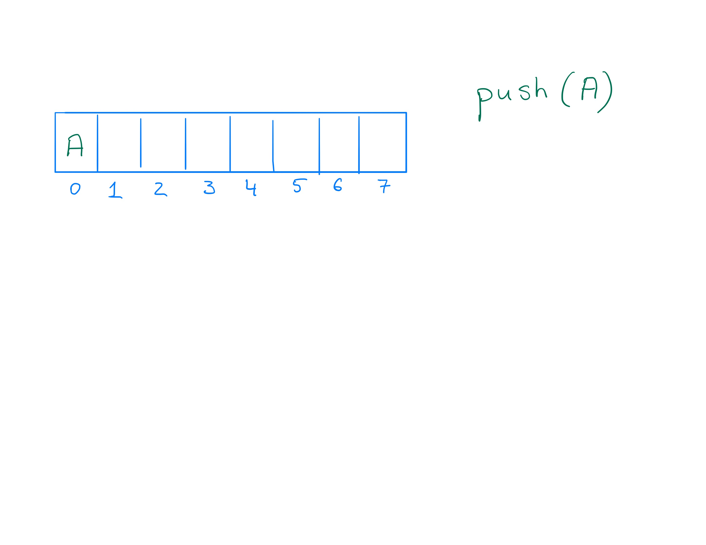

class: center, middle, title-slide # CSCI-UA 102 ## Data Structures <br> ## Stacks and Queues .author[ Instructor: Joanna Klukowska <br><br><br> ] .license[ Copyright 2020 Joanna Klukowska. Unless noted otherwise all content is released under a <br> [Creative Commons Attribution-ShareAlike 4.0 International License](https://creativecommons.org/licenses/by-sa/4.0/).<br> Background image by Stewart Weiss<br>] --- layout:true template: default name: section class: inverse, middle, center --- layout:true template: default name: poll class: inverse, full-height, center, middle --- layout:true template: default name: breakout class: breakout, middle --- layout:true template:default name:slide class: slide .bottom-left[© Joanna Klukowska. CC-BY-SA.] --- template: section # Stack ADT --- ## Stacks and Stack ADT __Stacks__ are structures in which elements are always added and removed from the same end (depending on how you visualize the stack, you may wish to think of that end as the top of the stack). Stacks are __last in first out (or LIFO) structures__. --- ## Stacks and Stack ADT ```java public interface Stack<E> { /** Add an element to the top of the stack * @param item character to be added to the stack */ public void push ( E item ) ; /** Remove and return the element from the top of the stack * @return the element from the top of the stack or null if the stack is empty * from the stack. If stack is empty, null is returned. */ public E pop () ; /** Return the element from the top of the stack. * @return the element from the top of the stack or null if the stack is empty */ public E peek () ; /** Produces string representation of the stack. * @return Returns a String object that contains all elements stored on the stack. * The elements are separatedb y spaces. The top of the stack is the rightmost * element in the returned string. */ public String toString () ; } ``` -- The Java's built in class implementing a stack is [`Stack<E>`](https://docs.oracle.com/en/java/javase/11/docs/api/java.base/java/util/Stack.html). --- ## Stack Implementation Using an Array One way to implement a stack is to use the array as the underlying storage. The decision that needs to be made is __where should the top and bottom of the stack be__. -- name: stack-array As with the array-based list implementation, we also need to make sure that the array _grows_ when the number of elements put on the stack reaches the capacity of the array. --- template: stack-array .left-column2-large[ ] capacity = 8 size = 0 --- template: stack-array .left-column2-large[  ] capacity = 8 size = 1 --- template: stack-array .left-column2-large[ ] capacity = 8 size = 2 --- template: stack-array .left-column2-large[ ] capacity = 8 size = 3 --- template: stack-array .left-column2-large[ ] capacity = 8 size = 2 __The top element is at index 2, so that is the element removed when `pop` is called__. --- template: stack-array .left-column2-large[ ] capacity = 8 size = 5 --- template: stack-array .left-column2-large[ ] capacity = 8 size = 3 --- template: stack-array .left-column2-large[ ] - __bottom of the stack__ is always at index 0 -- - __top of the stack__ moves as we push and pop elements -- - how do we know the index at which the next element should be pushed/added? -- __the index of the first _empty space_ is `size`__ -- - how do we know the index from which the element should be popped/removed? -- __the index of the _top_ is `size - 1`__ --- ## Stack Implementation Using an Array __Algorithm for push__ ``` if size >= capacity grow the array and copy all the elements to the new array array[size] = new element size++ ``` -- .left-column2[ __Algorithm for pop__ ``` if size == 0 nothing to pop else size-- return array[size] ``` ] -- .right-column2[ __Alternative algorithm for pop__ ``` if size == 0 nothing to pop else tmp = array[size-1] array[size-1] = null size-- return tmp ``` ] -- .below-column2[ <br> ] .left-column2[ __Algorithm for top__ (return, but do not remove the top element) ``` if size == 0 nothing to return else return array[size-1] ``` ] -- .right-column2[ .yellowbox[ __What is the performance of each of these algorithms?__ ] ] --- ## Stack Implementation Using a Linked Structure An alternative way of implementing a stack is to use a reference based structure just like we did for a list. -- name:stack-linked Again, the decision that needs to be made is __where should the top and bottom of the stack be__. --- template: stack-linked .center[ Which of the options A or B is better? Or is there no difference? ] --- name: stack-linked-end ## Stack Implementation Using a Linked Structure ### top of the stack at the _end_ --- template: stack-linked-end <img alt="stack using an array" src="img/06/stack-linked-11.jpg" width=600px /> --- template: stack-linked-end <img alt="stack using an array" src="img/06/stack-linked-12.jpg" width=600px /> --- template: stack-linked-end --- template: stack-linked-end --- template: stack-linked-end --- template: stack-linked-end --- name: stack-linked-front ## Stack Implementation Using a Linked Structure ### top of the stack at the _front_ --- template: stack-linked-front --- template: stack-linked-front --- template: stack-linked-front --- template: stack-linked-front --- template: stack-linked-front --- template: stack-linked-front --- template: section # Queue ADT --- ## Queues and Queue ADT __Queues__ are structures in which elements are added to one end (rear/back of a queue) and removed from the other end (front of a queue). Queues are __first in first out structures (FIFO)__. --- ## Queues and Queue ADT ```java public interface Queue<E> { /** Add an element to the queue. * @param item an element to be added to the queue */ public void enqueue ( E item ) ; /** Remove and return the element from the front of the queue * @return the element from the front of the queue or null if queue is empty */ public E dequeue () ; /** Return the element from the front of the queue * @return the element from the front of the queue or null if queue is empty */ public E peek () ; /** Compute a string representation of the queue. * @return String object representing the queue. The string should contain the * current queue elements one per line. */ public String toString () ; } ``` -- Java has a built-in interface for a queue: [`Queue<E>`](https://docs.oracle.com/en/java/javase/11/docs/api/java.base/java/util/Queue.html), and there are several classes that implement this interface. Note that the names for the methods are different in the above interface. --- ## Queue Implementation Using an Array One way to implement a queue is to use the array as the underlying storage. The decision that needs to be made is __where should the front and the end of the queue be__. -- name: queue-array And as before, we also need to make sure that the array _grows_ when the number of elements in the queue reaches the capacity of the array. --- template: queue-array .left-column2-large[ ] capacity = 8 size = 0 front = 0 back = 0 --- template: queue-array .left-column2-large[ ] capacity = 8 size = 1 front = 0 back = 1 --- template: queue-array .left-column2-large[ ] capacity = 8 size = 2 front = 0 back = 2 --- template: queue-array .left-column2-large[ ] capacity = 8 size = 5 front = 0 back = 5 --- template: queue-array .left-column2-large[ ] capacity = 8 size = 4 front = 1 back = 5 --- template: queue-array .left-column2-large[ ] capacity = 8 size = 3 front = 2 back = 5 -- ---- __front__ - index of the first element (size > 0) __back__ - index at which the next element should be added __size = back - front__ --- template: queue-array .left-column2-large[ ] capacity = 8 size = 6 front = 2 back = .red[???] --- template: queue-array .left-column2-large[ ] capacity = 8 size = 6 + 1 front = 2 back = .red[???] --- template: queue-array .left-column2-large[ ] capacity = 8 size = 7 front = 2 back = .red[1] -- ---- We can use the array as a __circular array__: where there are empty locations available in the front of the array, we _wrap_ the values back to the start of the array instead of allocating a new one. -- ---- <del>__size = back - front__</del> __size = <br> (back - front) mod capacity__ (when size < capacity) --- ### Aside: modulo arithmetic examples - 10 mod 8 = 2 -- - 2 mod 8 = 2 -- - 29 mod 8 = 5 -- - -6 mod 8 = (-6 + 8 ) mod 8 = 2 mod 8 = 2 -- - -9 mod 8 = -1 mod 8 = 7 mod 8 = 7 -- Note that Java's `%` operator does not compute the true modulus, it computes the remainder. The two are the same when both operands are positive. In java: `-6 % 8` evaluates to -6, to obtain true modulus, we need to add the divisor to the result: `(-6 % 8) + 8`. --- template: queue-array .left-column2-large[ ] capacity = 8 size = 7 front = 2 back = 1 --- template: queue-array .left-column2-large[ ] capacity = 8 size = 8 front = 2 back = 2 --- template: queue-array .left-column2-large[ ] capacity = 8 size = 8 front = 2 back = 2 -- ---- size == capacity so we need a larger array --- template: queue-array .left-column2-large[ ] capacity = 8 size = 8 front = 2 back = 2 ---- size == capacity so we need a larger array - create a new larger array - copy of the values from the old array to the new one - place the new value at the end --- template: queue-array .left-column2-large[ ] capacity = 8 size = 8 front = 2 back = 2 ---- size == capacity so we need a larger array - create a new larger array - copy of the values from the old array to the new one - place the new value at the end -- __Will this work?__ --- template: queue-array .left-column2-large[ ] capacity = 8 size = 8 front = 2 back = 2 ---- size == capacity so we need a larger array - create a new larger array - copy of the values from the old array to the new one - place the new value at the end __Will this work?__ .red[__NO__] --- template: queue-array .left-column2-large[ ] capacity = 8 size = 8 front = 2 back = 2 ---- size == capacity so we need a larger array --- template: queue-array .left-column2-large[ ] capacity = 8<br> size = 8<br> front = 2<br> back = 2 ---- size == capacity so we need a larger array - create a new larger array - copy of the values from the old array to the new one<br> for each index `i` in the old array, copy it to index <br> `(i - front) mod capacity` <br>in the new array - place the new value at the end -- __Will this work?__ --- template: queue-array .left-column2-large[ ] capacity = 8<br> size = 8<br> front = 2<br> back = 2 ---- size == capacity so we need a larger array - create a new larger array - copy of the values from the old array to the new one<br> for each index `i` in the old array, copy it to index <br> `(i - front) mod capacity` <br>in the new array - place the new value at the end __Will this work?__ .red[__YES__] --- ## Queue Implementation Using a Linked Structure An alternative way of implementing a queue is to use a reference based structure just like we did for a list. -- name:queue-linked Again, the decision that needs to be made is __where should the front and back of the queue be__. --- template: queue-linked .center[ Which of the options A or B is better? Or is there no difference? ] --- name: stack-linked-end ## Queue Implementation Using a Linked Structure ### front of the queue at the _end_ or _beginning_ of the structure --- template: stack-linked-end <img alt="queue using an array" src="img/06/queue-reference-29.jpg" width=600px /> --- template: stack-linked-end <img alt="queue using an array" src="img/06/queue-reference-30.jpg" width=600px /> --- template: stack-linked-end --- template: stack-linked-end --- template: stack-linked-end --- template: stack-linked-end --- template: stack-linked-end <img alt="queue using an array" src="img/06/queue-reference-25.jpg" width=600px /> --- template: stack-linked-end --- template: stack-linked-end --- template: stack-linked-end --- template:section # Examples and Things to Think About --- ## Algorithms for array-based queue On slide #25 we have algorithms for the stack operations when it is implemented using an array. Create similar algorithms for the array-based queue implementation. --- ## Stacks and Queues in Java - Study the [`Stack<E>`](https://docs.oracle.com/en/java/javase/11/docs/api/java.base/java/util/Stack.html) class. - can you tell if it is array-based on reference-based? - if it is one of the above implementations, is there an alternative in Java (i.e. are there classes in Java that provide array-based implementation and reference-based implementation - not in the same class, of course) - The above `Stack<E>` class mentions [`Deque<E>`](https://docs.oracle.com/en/java/javase/11/docs/api/java.base/java/util/Deque.html) interface. - how is it different from a sack? - what functionality does it provide? - what does _deque_ stand for? - The [`Queue<E>`](https://docs.oracle.com/en/java/javase/11/docs/api/java.base/java/util/Queue.html) interface is implemented by many classes. Pick the ones that you are familiar with and divide them into array-based implementations and reference-based implementations. </optgroup>